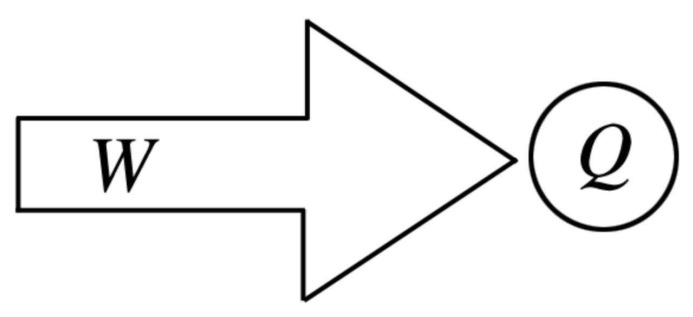
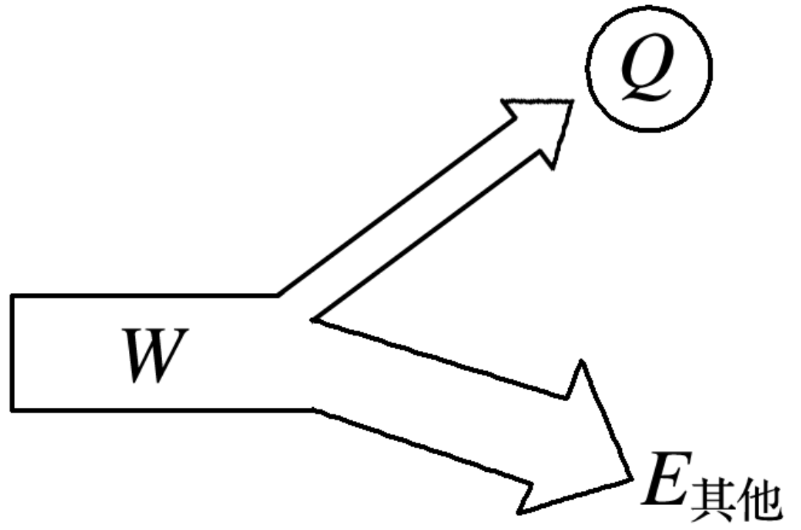
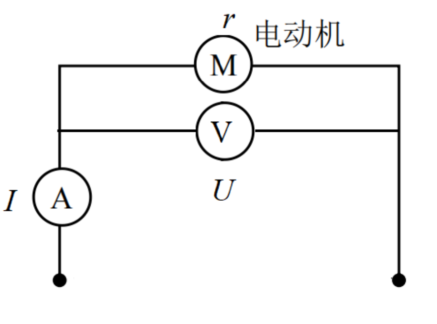
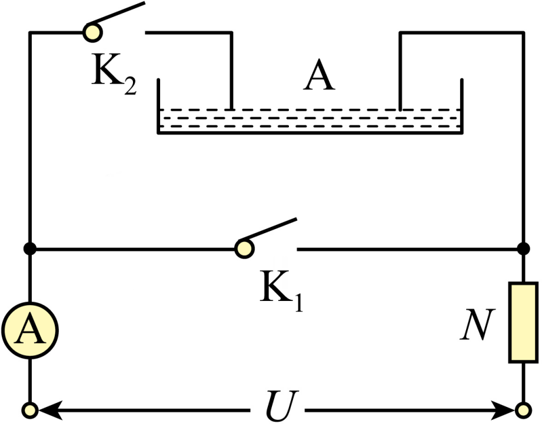
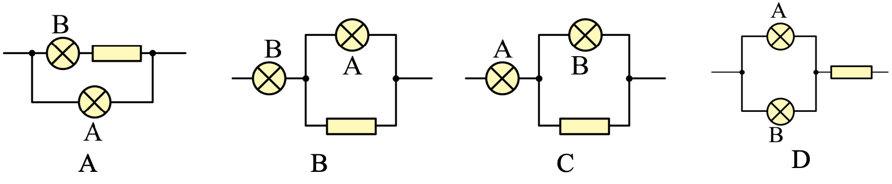
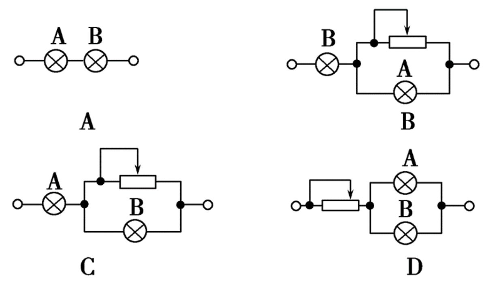

电路中的能量转化
电功和电功率
电功
- 定义：电流在一段电路中所做的功
- 公式：W=UIt
- 单位：
- 国际单位制：焦耳 (J)
- 常用单位：千瓦时 (kW\cdot h)，日常生活中称“度”
- 物理意义：电功是电能转化成其它形式的能的量度
- 实质：导体中恒定电场对自由电荷的静电力做正功，电势能减小，其他形式的能增加。
电功率
- 定义：电流在一段电路中所做的功与通电时间之比
- 公式：P=\frac{W}{t}=UI
- 单位：
- 国际单位制：瓦特 (W)
- 常用单位：千瓦 (kW)
- 物理意义：表示电流做功快慢的物理量
练习
把六个相同的小灯泡接成如图甲、乙所示的电路，调节变阻器使灯泡正常发光，甲、乙两电路所消耗的总功率分别用 P_{甲}和 P_{乙}表示，则下列结论中正确的是
A. P_{甲}=P_{乙} B. P_{甲}=3P_{乙} C. P_{乙}=3P_{甲} D. P_{甲}>3P_{乙}
焦耳定律
内容：电流通过导体时产生的热量 Q 等于电流 I 的二次方、导体的电阻 R 和通电时间 t 三者的乘积
表达式：Q=I^{2}Rt
热功率：单位时间内导体的发热量叫做热功率，表示单位时间内产生热量快慢的物理量
P_{热}=\frac{Q}{t}=I^{2}R
电路中能量的转换
把标有“220\;V\quad40\;W”的电热丝和“220\; V\quad 40\; W”的电动机，它们并联后接到 220\;V 的照明电路中，二者都能正常工作，它们在相同的时间内产生的电热相同吗？为什么？
纯电阻与非纯电阻


纯电阻电路中 W=Q， 即 UIt=I^{2}Rt\Rightarrow U=IR 欧姆定律成立
- 计算电功和电热时 W=Q=UIt=I^2Rt=\frac{U^2t}R
- 计算电功率和热功率时 P=UI=I^{2}R=\frac{U^{2}}{R}
非纯电阻电路中 W>Q， 即 IUt>I^{2}Rt\Rightarrow U>IR 欧姆定律不成立
- 计算电功时只能用 W=IUt；计算电热只能用 Q=I^{2}Rt
- 计算电功率只能用 P=UI；计算热功率只能用 P=I^{2}R
练习
把家用电炉的电热丝剪去一小段后，继续使用，则在同样的时间内
A. 由 Q＝I^{2}Rt 可知，电炉的发热量减小
B. 由 Q＝UIt 可知，电炉的发热量不变
C. 由 \frac{Q＝U^{2}}{R}t 可知，电炉的发热量增大
D. 无法确定
非纯电阻电路问题分析
- 输入功率：电动机消耗的总功率 P_{入}=UI
- 热功率：线圈上电阻的发热功率 P_{热}=I^{2}r
- 输出功率（机械功率）：电动机将电能转化为机械能的功率：P_{出}=P_{入}-P_{热}=UI-I^{2}r
- 电动机的效率：\eta=\frac{P_{出}}{P_{入}}=\frac{UI-I^{2}r}{UI}

练习
如图所示为电动机提升重物的装置，电动机线圈电阻 r=1\Omega 电动机两端电压为 5\;V，电路中的电流为 1\;A，重物 m 受到重力为 20\;N。不计摩擦力，求：
- 电动机的输入功率和线圈电阻上消耗的热功率各是多少？
- 电动机的输出功率和效率各是多少？
- 电动机可以把重物以多大的速度竖直向上提升？

练习
如图所示，A 为电解槽（电能转化为化学能的装置），N 为电炉子，恒定电压 U=12\;V，电解槽内阻 r_{A}=2\;\Omega，当 K_{1} 闭合，K_{2} 断开时，电流表示数 I_{1}=6\;A；当 K_{2} 闭合，K_{1} 断开时，电流表示数为 I_{2}=2\;A，不计电流表内阻，求： 1. 电炉子的电阻 R 及发热功率 P_{R}； 2. 在电解槽工作时，电能转化为化学能的功率 P_{化}。

Q&A
在纯电阻电路中 1. 两个电阻串联，电阻大的电功率？ 2. 两个电阻并联，电阻大的电功率？
串/并联电路中，两个电阻消耗的功率与每个电阻功率的关系？
练习
两只额定电压均为 110\;\mathrm{V} 的灯泡 A 和 B，额定功率分别为 40\;\mathrm{W} 和 100\;\mathrm{W}，为了使它们接到 220\;\mathrm{W} 电源上能正常发光，同时电路消耗的电功率最小，如图所示的四个电路中最合理的是图 \underline{\qquad}

练习
额定电压都是 110\;\mathrm{V}，额定功率 P_{A}＝100\;\mathrm{W}，P_{B}＝40\;\mathrm{W} 的电灯两盏，若接在电压是 220\;\mathrm{V} 的电路上，使两盏电灯均能正常发光，且电路中消耗功率最小的电路是 \underline{\qquad}
